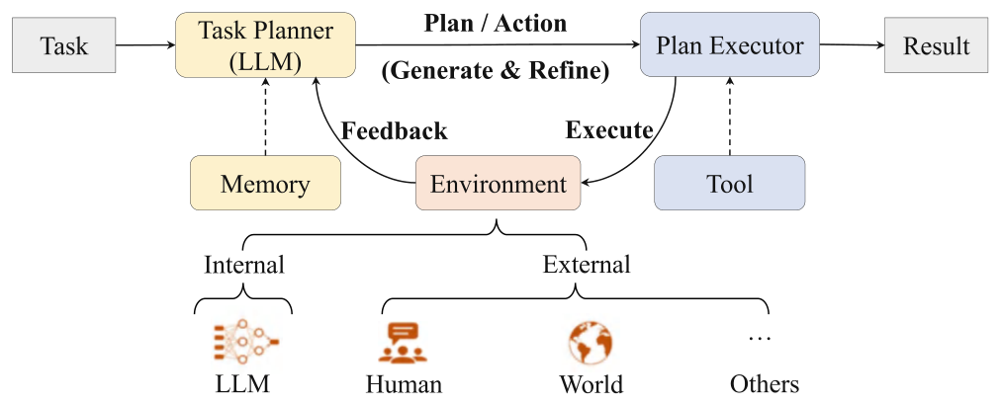
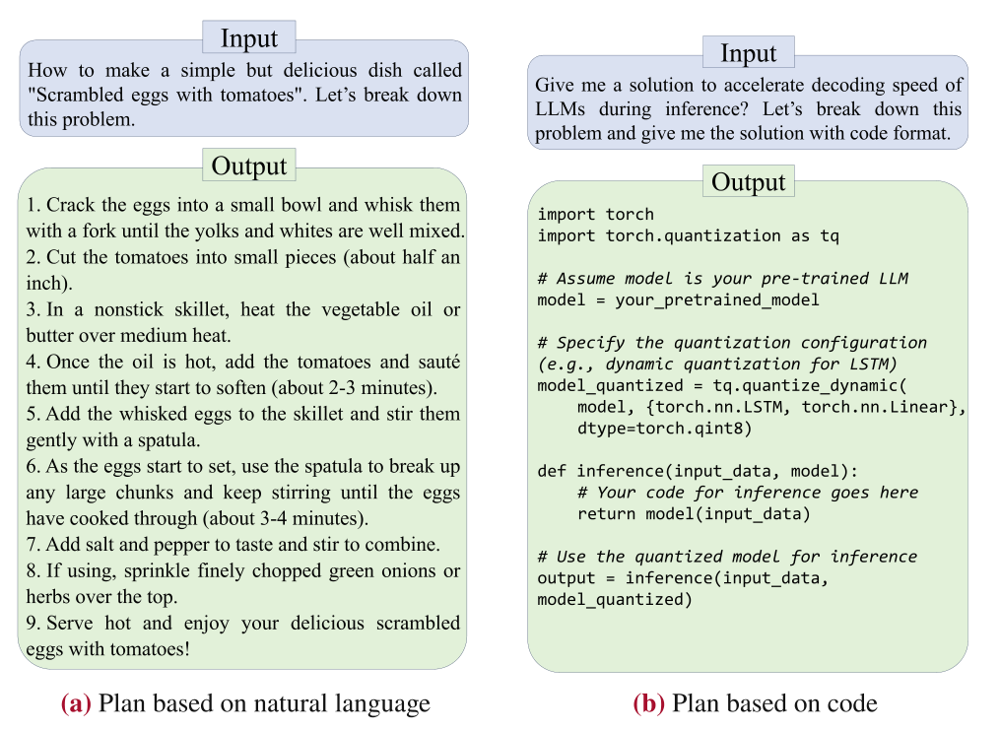
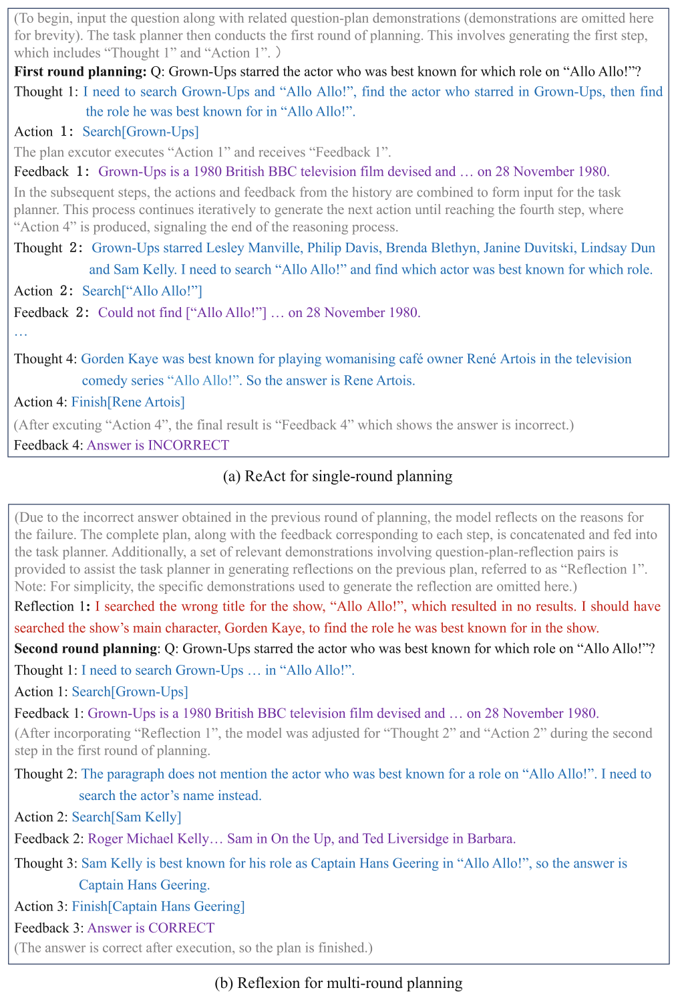
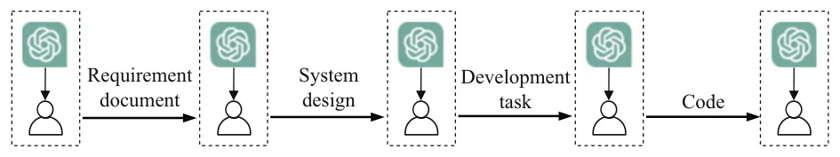

Chapter 11Advanced Reasoning
Abstract This chapter explores how large language models (LLMs) tackle complex tasks through advanced reasoning strategies, highlighting techniques that extend beyond simple prompts. It first introduces the LLM-based planning framework, outlining how tasks are decomposed into subtasks and refined based on feedback from either external sources like tools and humans or internal assessments provided by the model itself. Building on this foundation, it discusses the construction of LLM-based agent systems, emphasizing three core components: a memory module (for storing and retrieving key information), a planning module (for generating and refining action sequences), and an execution module (for carrying out actions in real or virtual environments). The chapter then illustrates how these agents operate individually and in multi-agent settings, where communication and coordination mechanisms enable them to share information, allocate tasks, and collectively achieve larger goals. Several application examples-including WebGPT for information retrieval, MetaGPT for software development, and Westworld-style simulations-demonstrate the versatility of LLM-based agent systems. Despite promising results, the chapter also underscores major challenges, such as resource consumption, tool integration, communication bottlenecks, and the complexities of operating in real-world scenarios. Concluding with the new paradigm of long chain-of-thought reasoning, this chapter shows how extended internal reflections, iterative verification, and more involved search strategies allow LLMs to solve increasingly difficult problems, thereby laying the groundwork for more sophisticated and autonomous AI systems.
For simpler problems, direct prompts or enhanced approaches (e.g., chain-of-thought) typically lead to satisfactory solutions. However, for more complex tasks, advanced reasoning methods must be explicitly developed to address the greater challenges posed to large language models (LLMs). This chapter is dedicated to exploring these methods. It begins by introducing the LLM-based planning framework (Sect. 11.1), comprising two

key steps: plan generation and feedback acquisition. Building on this foundation, we will explore the development of LLM-based agent systems and their applications across various scenarios (Sect. 11.2). Finally, we will introduce a new reasoning paradigm centered around a long chain-of-thought process, exemplified by OpenAI-o1 and DeepSeek-R1 models (Sect. 11.3).
11.1LLM-Based Planning#
Although in-context learning and chain-of-thought prompting are generally applicable to a wide range of tasks, they often face challenges with complex tasks such as mathematical problems, programming, and managing daily activity [305]. To tackle these challenges, LLM-based planning methods have been developed. The core idea is to decompose complex tasks into a sequence of interrelated subtasks, enabling plans to be executed through step-by-step actions. This approach simplifies the solution process by transforming complex tasks into manageable components. This section introduces LLM-based planning methods as a key technical approach for constructing agent systems (see Sect. 11.2).
11.1.1Overall Framework#
As shown in Fig. 11.1, the LLM-based planning method consists of three main components: the task planner, the plan executor, and the environment.1 In this framework, the LLM serves as the task planner, generating plans to the target task as a sequence of executable actions, which may be in the form of natural language descriptions or code snippets. For more complex tasks, the task planner may further incorporate a memory mechanism to save and retrieve plans or intermediate results. The plan executor is responsible for executing the actions specified in the plan. Depending on the task, the executor could be the LLM itself or an entity capable of physical actions, such as a robot. The environment represents the specific context in which the executor operates, with each task corresponding to a unique execution environment, such as the Internet or external virtual platforms like Minecraft.
To tackle complex tasks, the task planner first generates a plan, either by devising a comprehensive action sequence that encompasses all steps at once or by iteratively producing actions for each subsequent step (see Sect. 11.1.2). The plan executor then carries out these actions within the environment, which provides feedback to the task planner (see Sect. 11.1.3). The task planner utilizes this feedback to optimize or refine the plan, iteratively enhancing the task response. The following sections provide a detailed discussion of these two key parts.
11.1.2Plan Generation#
LLMs can solve specific tasks by employing carefully designed prompts that harness their advanced reasoning capabilities. These plans, which may include intermediate steps, can be expressed in either natural language or code. While natural language is more intuitive and user-friendly, its inherent ambiguity and complexity can hinder precise execution. In contrast, code offers a structured and standardized format, enabling integration with external tools, such as code interpreters, to ensure accurate execution. Figure 11.2 compares plans in natural language and code.
1Unlike reinforcement learning (RL), our formulation separates the planning and execution phases, whereas in RL, these phases are typically interleaved within the agent. This paradigm is defined in a general yet somewhat flexible manner, primarily to help readers understand the core concepts of the planning method.

Current research primarily utilizes two planning approaches: one-time plan generation and iterative plan generation. The one-time plan generation approach requires the task planner to produce a complete plan in a single pass, detailing every sub-step. While this method is straightforward to implement, it has low fault tolerance; any error in an intermediate step can compromise the final outcome.
In contrast, the iterative plan generation approach incrementally builds the action sequence through interactions with the environment, allowing for corrections and adjustments based on feedback. This subsection will provide a detailed discussion of these two approaches.
One-Time Plan Generation
This method uses specially crafted prompts to enable the LLM to generate a complete plan in a single pass. Typically, the scheduled plan includes a sequence of action steps that the plan executor can follow. For example, prompts like “Let’s break down this problem” help guide the LLM in developing a plan for the target task. As illustrated in Fig. 11.2a, the LLM is prompted to outline the steps for preparing scrambled eggs with tomatoes. The model generates a candidate plan in natural language, providing detailed instructions for execution. Additionally, plans can be formatted as code. For example, Fig. 11.2b
displays how the LLM, given an inference acceleration task and an appropriate prompt, produces a plan in code format.
In practice, choosing the right planning approach depends on the characteristics of the task. For tasks that require strong logical reasoning or precise calculations, a code-based plan is generally recommended. For less structured tasks or those that are difficult to formalize, such as multi-hop question answering, information retrieval, or recommendation tasks, natural language descriptions are often preferred. This recommendation also applies to the iterative plan generation method discussed below.
Iterative Plan Generation
In this approach, the LLM progressively plans subsequent actions based on prior actions and current environmental feedback.
A representative method, ReAct [306], prompts the LLM to adopt a human-like strategy of “reason first, then act” while planning. Initially, the LLM is prompted to identify the appropriate action for the current state, generating both a rationale and a corresponding action. The plan executor then executes this action in the environment, and the feedback received guides the subsequent planning steps. This iterative process allows the planner to formulate justifications and actions for each subsequent step, iteratively refined through ongoing feedback. This method incrementally refines the actions until the task is complete. However, if a step is suboptimal or if errors arise, the planner may continue without adjustments, potentially resulting in a flawed or incomplete plan. To counteract this, a backtracking strategy can be adopted, enabling the planner to revert to an earlier state and explore alternative actions, thereby enhancing the final outcome. An example of this is the tree-of-thoughts method, which enables planners to backtrack and reassess decision paths.
Figure 11.3a illustrates the prompt design and detailed planning process of ReAct for solving multi-hop question answering tasks. Within this process, the task planner generates the next thought for decision-making and the corresponding action based on previous actions and their feedback. The plan executor then executes the action and receives feedback from the environment. This process repeats until the task is completed. For instance, during the second step of planning, the task planner generates Thought 2 (analyzing the information related to “Grown-Ups”) and Action 2 (searching for information on “Allo Allo!”) based on Action 1 (searching for information on “Grown-Ups”) and “Feedback 1”
(the information returned about “Grown-Ups”). The plan executor then performs Action 2 and receives Feedback 2 (the information returned about “Allo Allo!”).
11.1.3Feedback Acquisition#
After the task planner generates a complete plan or specifies the next action, the plan executor carries out the action in the environment and provides feedback to the task planner. This feedback is then utilized to refine the overall plan or to guide subsequent actions. Typically, environmental feedback can be categorized into two main types: external and internal. The following part will explore each type in detail.
External Feedback
External objects can provide crucial feedback signals to task planners, encompassing input from external tools, human interactions, and virtual environments.
First, external tools like code interpreters play an essential role in addressing programming or mathematical tasks. These tools execute code-based plans or actions and relay the outcomes to the task planner, thus enhancing its planning capabilities. For example, when an error arises during execution, the interpreter provides feedback on the error, allowing the planner to revise the following actions accordingly.
Secondly, in scenarios involving embodied intelligence, humans serve as a crucial source of feedback. When robots interact with humans, they gain real-time information about the physical world through queries or actions. This feedback is essential for improving the robot’s perception and understanding of its environment. For instance, if a robot inquires about the status of a drawer as it approaches, a human can provide immediate feedback on whether the drawer is open.
Lastly, in gaming, virtual environments provide real-time feedback on action execution, aiding the task planner in efficiently completing game-related tasks.
Internal Feedback
In addition to external feedback, LLMs can also provide valuable feedback to the task planner. First, LLMs can assess the accuracy of the current action plan. By inputting the historical sequence of actions and corresponding feedback into the LLMs with a prompt like “Is the current action step correct?”, the LLMs can evaluate a new action’s appropriateness and provide feedback.

Another method that utilizes LLMs is to enrich or interpret environmental feedback, as external feedback is limited and primarily reflects execution status. Specifically, LLMs can transform basic environmental feedback, such as success or failure, into more informative natural language summaries. In implementation, it is crucial to incorporate completed task plans and their associated environmental feedback into the prompts, along with any relevant contextual examples. This internal feedback assists the task planner in generating improved solutions. An exemplary method is Reflexion [307], which leverages the analytical and reasoning capabilities of LLMs to provide targeted insights on the outcomes of current plans, thereby refining existing solutions.
The application of the Reflexion method in multi-hop question answering tasks is illustrated in Example 11.3(b). Initially, feedback from the previous plan is provided to the task planner to generate a reflection (e.g., Reflection 1). Subsequently, the task planner uses the previous plan, feedback, and reflection to produce a new plan. This process is repeated iteratively until successful feedback is achieved. Notably, after incorporating Reflection 1 into the prompt, the model revises the second step of the initial round (searching for information related to “Allo Allo!”) to a new Action 2 (searching for information related to “Sam Kelly”) in the second step of the next round.
11.2LLM-Based Agent Systems#
An agent is generally defined as an autonomous algorithmic system capable of perceiving its environment, making decisions, and executing actions [308]. In early research, agents were designed to simulate human or organism behavior with the goal of solving problems or performing tasks autonomously. However, traditional agent systems often encounter a significant technical challenge: they rely on simple operating algorithms (e.g., heuristic rules) or are confined to specific environments, which greatly limits their adaptability and scalability in open, dynamic scenarios [309]. Given the capabilities of LLMs to address complex tasks, recent research has shifted toward integrating LLMs as essential components of agents to enhance performance in such environments [310]. This section begins with a brief overview of agent systems, followed by a detailed introduction to the framework of LLM-based agents, and concludes with a discussion of potential applications and challenges agents face across various scenarios.
11.2.1Overview of Agents#
In the early stage of AI, rule-based methods dominated agent technology [311]. These methods, which relied on predefined rules and logic established by experts, enabled agents to simulate human decision-making for specific tasks. However, constrained by fixed rules and static knowledge bases, early agent systems often lacked the adaptability and flexibility required to effectively handle new scenarios.
With the rise of deep learning, model-based agents have garnered significant attention. These systems develop adaptive decision-making models based on environmental features, thereby reducing reliance on predefined rules. In model-based agents, reinforcement learning methods are pivotal, enabling agents to acquire optimal strategies through environmental interactions [312]. By exploring and leveraging feedback from these interactions, agents iteratively adjust their actions to maximize cumulative rewards. This approach has driven substantial progress in fields such as gaming and autonomous driving. Recent advancements in LLM technology have showcased impressive learning and planning capabilities, enabling these models to tackle complex and abstract tasks with proficiency in natural language understanding, reasoning, and decision-making. Agent systems powered by LLMs leverage these capabilities to interact autonomously with their environments, demonstrating promising potential for applications [310].
11.2.2Construction of LLM-Based Agents#
This part details the construction of an LLM-based agent system, focusing on three essential components: memory component, planning component,2 and execution component. Through the interaction of these components, the agent can effectively perceive its environment, make decisions, and execute planned actions to accomplish assigned tasks. To further illustrate these components in action within an LLM-based agent, we will also present a recommender system agent based on the user simulation framework in RecAgent [105].
2For detailed information on planning, refer to Sect. 11.1. Here, planning is introduced as a functional
Memory Component
Human memory is a complex and efficient system, adept at storing new knowledge and recalling information as needed. Similarly, in AI models, memory components act as core storage units within agents, mainly to retain historical records of interactions with the environment for retrieval and use when necessary. This information can take various forms, including text, images, and sounds. For example, chatbots employ memory components to store user preferences, enabling a more personalized service experience. In LLM-based agents, relevant information is stored in both short-term and long-term memory using specialized read-write operations. The system can then flexibly access these memories to support its cognitive and reasoning processes, depending on the nature of the task. Generally, there are two types of memory as below.
- Short-term memory. Short-term memory serves as a temporary storage and processing mechanism for information related to an agent’s current context. In LLM-based agents, short-term memory typically corresponds to the model’s internal context window (i.e., the input window), which is accessed through model inference mechanisms. Information stored in short-term memory has a limited duration and capacity, with most of it being used only once. However, it can be transferred to long-term memory if needed. For example, as illustrated in Example 11.1, short-term memory is used in RecAgent when the LLM retrieves the user’s recent observations, such as the current time and recent events, and incorporates them into the input prompt. In the interaction process, the model can leverage the short-term memory to enable accurate action planning and execution.
- Long-term memory. Long-term memory functions as a repository for information that an agent retains over extended periods. This information is persistent, remaining stable even with infrequent access, and includes a wide range of content, such as factual knowledge, foundational concepts, past experiences, and essential skills. The storage format for long-term memory is flexible, utilizing text files, structured databases, or other external storage systems. LLMs retrieve information from long-term memory through a retrieval component and update it via a reflection process [307]. To ensure storage efficiency, duplicate or outdated entries can be removed when capacity limits are reached. Typically, an agent’s roles and functions are stored in long-term memory, with key details often preserved in configuration files [310]. As illustrated in Example 11.1, the long- Example 11.1 Example of recommender system agent developed based on the RecAgent framework term memory component of RecAgent stores user configuration files, recent experiences, observations, and the agent’s current state. During action planning and execution, the agent accesses relevant information from long-term memory to guide informed decision-making process. Planning Component The planning component enables the agent to tackle tasks in a human-like manner by breaking down complex tasks into a sequence of manageable subtasks, which can be addressed sequentially. This structured approach reduces the overall difficulty of completing challenging tasks, improving efficiency, effectiveness, and adaptability in complex environments. In the case of complex tasks, the agent can iteratively refine and optimize its plans based on real-time feedback from the environment, enabling it to manage tasks that require sophisticated reasoning effectively. For more details about planning, please refer to the content in Sect. 11.1. Example 11.1 illustrates how the agent formulates an initial planning strategy at the beginning of the task by leveraging both long-term and short-term memories along with environmental information. Before each action, the agent refines the current plan based on newly received information to ensure the rationality of its behavior. Execution Component The execution component is crucial for agents, as it is responsible for carrying out the task plans generated by the planning component. This component enables the agent to perform specific actions, interact with the environment, and receive feedback on the outcomes of its actions. For effective operation, the execution component typically works in coordination with both the memory and planning components. During decision-making, the agent follows the action plan provided by the planning component, while simultaneously consulting both long-term and short-term memory to ensure accurate and effective execution. The execution component can technically implement a given plan using its internal language model [313] or enhance its execution abilities by integrating external tools [306]. Example 11.1 illustrates an agent executing a specific plan. In this example, the agent first accesses the recommender system as per the plan, accepts the movie recommendation Interstellar, watches it, then discusses the movie with other agents, and finally completes the entire series of planned actions. Workflow The workflow of an LLM-based agent in an environment, based on the three core components, is as follows. First, the agent perceives and analyzes the current state, retrieving relevant historical information or background knowledge from its memory component to gain a comprehensive understanding of the context. Next, the planning component integrates information from both long-term and short-term memory to generate the next action or plan, evaluating multiple plans to choose the optimal action path. Following this, the execution component carries out the plan generated by the planning component, interacting with the environment as necessary. The agent may also utilize external tools or resources to enhance its execution capabilities at this stage. Finally, the agent receives feedback from the environment through sensory units or system interfaces, temporarily storing this information in short-term memory. As the agent processes this feedback, irrelevant observations are filtered out, while significant data is retained and processed for future planning. This entire process is then recorded as new memory in the memory component. When receiving user requests or handling specific tasks, the agent engages in multiround interactions with the environment, following this established process to progressively accomplish its objectives. Throughout this process, the LLM-based agent can dynamically adjust its strategy based on real-time feedback from the environment. Example 11.1 demonstrates a simulated recommender system scenario involving an LLM-based agent. In this example, the agent simulates the interactive behavior of a virtual user, Bob, within the recommender system. The agent begins by accessing short-term and long-term memory within the virtual environment, which includes recent movie-watching behavior of friends and its current status. It then formulates a movie-related action plan and performs a series of actions, such as retrieving movie recommendations, watching films, and engaging in discussions with friends.
11.2.3Construction of Multi-agent Systems#
In contrast to the independent operation of a single agent, multi-agent systems emphasize cooperation among agents to harness the power of collective intelligence. In these systems, multiple agents—each potentially powered by the same or different types of LLMs—are instantiated, with each assigned specific roles and functions. Through interaction and collaboration, these agents significantly enhance the system’s flexibility and adaptability, enabling it to tackle tasks that are more complex and demanding than those a single agent could handle. Building a multi-agent system requires agents to possess autonomy and decision-making capabilities. They must also understand and anticipate the behavior of other agents, as well as communicate effectively. As such, designing and implementing a multi-agent system requires thorough consideration of interaction protocols and cooperative strategies. This part will first provide an overview of the methods for constructing multi-agent systems, followed by an in-depth discussion of communication and coordination mechanisms within these systems.
Construction Methods of Multi-agent Systems
To build a multi-agent system, it is essential to first define the problems the system must solve or the goals it aims to achieve, followed by the creation of multiple agents within the system (see Sect. 11.2.2 for specific methods). During agent creation, the type, number, and characteristics of the agents should be tailored to the complexity and functional requirements of the problem. For example, the primary tasks of an agent may include planning, knowledge acquisition, or complex reasoning, depending on the specific application and objectives. Each agent should be designed with distinct functional capabilities, structural features, and behavioral strategies.
A critical step in constructing a multi-agent system is defining the interaction methods among agents, including cooperation, competition, and information exchange. Establishing protocols, strategies, or game-theory rules is essential for ensuring effective coordination among agents (see the following discussion on communication and coordination mechanisms within multi-agent systems). Additionally, key factors such as scalability, maintainability, security, and heterogeneity must be considered to ensure the system’s stability and continuous improvement over time. Once these steps are completed, the
multi-agent system can be deployed in specific application environments, where it will undergo continuous monitoring and maintenance.
Communication and Coordination Mechanisms of Multi-agent Systems
In multi-agent systems, communication and coordination mechanisms are fundamental technologies that enable effective cooperation among agents. These mechanisms aim to enhance information exchange and facilitate capability sharing. While each agent has its own perception, learning, and decision-making abilities, its access to information and task execution capabilities are often limited. Communication and coordination mechanisms allow agents to share information, allocate tasks, and synchronize actions, thereby improving the overall performance and efficiency of the system. The following part discusses these two essential mechanisms in detail.
- Communication mechanism. The communication mechanism in multi-agent systems generally consists of three key elements: communication protocol, communication topology, and communication content. Firstly, communication protocols define the rules for information exchange among agents, specifying the mode, frequency, and sequence of interactions. Secondly, communication topology outlines the network of connectivity between agents, indicating which agents can communicate directly and which require in-termediaries. Finally, communication content refers to the information exchanged among agents, such as status updates, control commands, and task objectives, which may be conveyed through natural language, structured data, or code.
- Coordination mechanism. The coordination mechanism in multi-agent systems typically encompasses cooperation, competition, and negotiation. Cooperation enables agents to achieve shared goals through resource, information, and task sharing; competition allows agents to seek optimal plans in resource-constrained environments using game theory and bidding mechanisms; and negotiation helps agents resolve conflicts over objectives or resources through information exchange and mutual concessions. In practical applications, the communication and coordination mechanisms of multi-agent systems must meet specific requirements: timeliness, reliability, and security. Timeliness ensures timely information transmission for coordinated, real-time responses; reliability demands a stable communication system to prevent information loss or miscommunication; and security requires protection of communication content to safeguard against malicious attacks or data theft.
11.2.4Typical Applications of LLM-Based Agents#
LLM-based agents have demonstrated significant potential in autonomously solving complex tasks, showing capabilities not only in handling specific tasks but also in constructing virtual simulation environments for intricate application scenarios. This part introduces three typical application examples of LLM-based agents.
WebGPT
WebGPT [27], developed by OpenAI, is a language model with information retrieval capabilities, fine-tuned from GPT-3 and designed as an early prototype of an LLM-based agent. WebGPT functions in a text-based web browsing environment, enhancing the model’s ability to access and utilize external knowledge. Through the information-seeking process, WebGPT autonomously interprets users’ natural language queries, conducts web searches, and interacts with web pages to gather and analyze information. It autonomously searches for relevant pages, navigates through them, and synthesizes the gathered data to provide accurate, detailed answers with references. Human evaluations have demonstrated that WebGPT’s answers achieve accuracy levels comparable to human responses in question answering tasks.
MetaGPT
MetaGPT [314] is a multi-agent collaborative framework designed to simulate the structure and operation of human organizations within the software development process. It assigns distinct roles (such as product manager, architect, project manager, software engineer, and test engineer) to agents within the system, coordinating their efforts according to standardized software engineering workflows. These workflows encompass various stages of the software development life cycle, including requirements analysis, document creation, system design, task allocation, code implementation, and system testing. Figure 11.4 depicts a simplified workflow of MetaGPT for software development.
The MetaGPT framework is composed of two main layers: a foundational component layer and a collaboration layer. The foundational layer includes core components

essential to the multi-agent system, such as the environment, memory, roles, actions, and tools. Built on top of this, the collaboration layer defines specific communication and cooperation mechanisms, such as knowledge sharing and workflow encapsulation. Compared to human project teams, MetaGPT offers higher development efficiency and significantly reduced costs; however, the code it generates does not always execute successfully, underscoring the need for improvements in its reliability.
Westworld Sandbox Simulation
In April 2023, researchers introduced the concept of “generative agent” [315] to investigate the use of LLM-based agents in social simulation, creating a sandbox environment similar to Westworld. In this simulation, multiple agents inhabit a small town, each guided by a unique character profile—configuration files that describe their identities in natural language. These characters can autonomously communicate with one another and interact with the environment in various ways, such as reading in the library or drinking at the bar, with all actions meticulously recorded in natural language.
Generative agents constitute a critical technical foundation for LLM-based simulation research, paving the way for future applications in recommendation systems, web search, and more [105, 316, 317]. These advancements highlight how LLMs have greatly expanded the possibilities for developing autonomous agents, with immense potential for future innovations. To systematically advance multi-agent applications, researchers can leverage open-source libraries tailored for LLM-based agents, such as AgentScope [318] and RecAgent [105]. These libraries offer pre-built functional modules that streamline system design and enhance research and development efficiency.
11.2.5Key Technical Issues#
Despite the advancements achieved by LLM-based agents, they still face several technical challenges in real-world applications. Below are some of the key challenges.
- High consumption of computational resources. As LLMs grow in scale, the computational resources required for training and deployment have increased substantially. For a single agent, each action generally necessitates invoking the LLM, leading to high resource demands. In multi-agent systems, where multiple LLMs might operate concurrently, resource consumption becomes even more challenging, limiting scalability and hindering large-scale deployment. Therefore, optimizing resource efficiency for LLM-based agents is a crucial area of research.
- Effective and extensive tool use. Like humans, agents often rely on external tools to complete specific tasks, such as using search engines to retrieve information. The effective use of tools is crucial for expanding agent’s capabilities; however, LLM-based agents face substantial challenges in tool integration. Existing tools are typically developed without considering compatibility with LLMs, which may limit their effectiveness in complex settings. Moreover, as the variety of available tools increases, LLM-based agents require enhanced flexibility to effectively utilize a broader range of tools for complex tasks.
- Efficient multi-agent communication. As the number of agents in multi-agent systems grows, communication and coordination become increasingly complex. Effective coordination necessitates efficient communication mechanisms to ensure each agent can access the necessary information, make informed decisions, and fulfill its designated role. As a result, it is challenging to develop scalable communication protocols and organizational structures for large-scale agent systems, especially when considering factors such as agent heterogeneity, system scalability, and real-time interactions.
- Model adaptation for agent systems. While LLMs demonstrate strong capabilities, they still face limitations in supporting fundamental agent systems. For instance, current LLMs still need to be improved in understanding complex instructions and managing long-term memory. Additionally, maintaining persistent identities and behavioral modes over time remains challenging, which impacts the applications such as role play. Overall, targeted optimization and adaptation of LLMs are necessary to better support the efficient operation of agent systems.
- Real-world agent simulation. Although significant progress has been made in applying LLM-based agents to virtual simulations, deploying them in real-world environments presents new challenges. Real-world applications, such as robotics, encounter complexities absent in virtual settings, including hardware limitations, mechanical errors, and potential operational failures. The extensive information demands and stringent safety requirements of the real world surpass those of virtual environments. For example, autonomous driving systems must adhere to rigorous standards to prevent serious consequences. Ensuring that agents’ decisions and actions align with human norms and standards is crucial for their real-world deployment. As LLM technology advances, these challenges are expected to be gradually ad-dressed, and it is promising to explore broader applications of LLM-based agents and related simulation systems in the future.
11.3Long Chain-of-Thought Reasoning#
In this section, we introduce a new reasoning paradigm for LLMs aimed at solving complex tasks by allocating more time to thinking before responding to a problem, i.e., conducting long chain-of-thought (CoT) reasoning.3 We will begin by providing an overview of long CoT reasoning, then introduce the construction of long CoT data and the corresponding training methods, and finally discuss more general test-time scaling methods.
11.3.1Overview and Analysis#
Generally, long CoT reasoning is a method to search for solutions within the natural language space, as reflected in the output responses of LLMs. This approach is akin to the slow thinking mode of the human brain [319], which takes significantly more time to think through difficult problems compared to the fast thinking mode used for simpler ones. This subsection will first qualitatively analyze the reasoning patterns and then briefly discuss the main advantages of this reasoning mode.
3The phrase “long CoT” may not be conceptually precise since the model’s thought process could be tree- or graph-structured rather than strictly linear. We use this terminology in line with OpenAI’s introduction of
User:How many positive whole-number divisors does 196 have?
DeepSeek-R1: Okay, so I need to figure out how many positive whole-number ...
Alright, let me try to factorize 196 ...
Now, the formula for the number of divisors is to take the exponents ...
Let me double-check that by listing them out to make sure I didn’t make a mistake...
Alternatively, backtracking could be used to generate all combinations ...
Wait, let me list them all systematically: 1, 2, 4, 7, 14, 28, 49, 98, 196 ...
Therefore, I think the answer is 9. But let me just confirm once more...
Answer: 196 has 9 . positive whole-number divisors.
User: Which city in China has the largest population?
DeepSeek-R1: Okay, the user is asking which Chinese city has the largest ...
First, confirm the latest data. As of 2023 or 2024, Shanghai’s urban population ...
The user might not be aware of the distinction between city proper and administrative
area. So, in my answer, I should clarify both scenarios to avoid confusion...
Make sure to reiterate the numbers: Shanghai 24.9 million (city proper), Chongqing
32 million (administrative)...
Avoid using technical jargon, keep it simple...
Answer: Shanghai has the largest urban population, while Chongqing is larger admin-
istratively (but not purely urban).
Example 11.2 Examples of long CoT reasoning from DeepSeek-R1 (accessed
on January 25, 2025). Gray fonts denote the thought part of the model output,
and italic fonts denote the final answer
Reasoning Patterns Analysis
As demonstrated in Example 11.2, existing long CoT reasoning models typically generate an extended thought process (in gray) before arriving at the final answer (in italic). It is crucial to understand how this thought process is conducted and the types of reasoning patterns generated by LLMs during problem-solving. To provide an intuitive understanding of this reasoning process, we present two examples from the DeepSeek-R1 model.
In the first example, we present a mathematical problem to the model, and the corresponding long CoT can be observed in the reasoning portion of the response. The thought process here is informal and flexible, while showcasing a systematic exploration of
the solution within the natural language space. Concretely, the model follows a complete reasoning process consisting of action steps like “factorize 196” and“take the exponents.” Notably, the thought process naturally includes trigger keywords like “double check” and “wait,” which invoke the corresponding verification or reflection actions. In the second example, we ask the model which Chinese city has the largest population. Interestingly, it exhibits similar thought patterns, even though the question could be addressed in a more compact and straightforward manner. The model generates a comprehensive reasoning process with actions such as “confirm the latest data” and “clarify,” with trigger keywords like “make sure” and “avoid.”
To gain a more comprehensive understanding of this complex reasoning mode, some research has further analyzed the reasoning patterns exhibited in the o1 model [320]. These studies, based on empirical investigation, have identified several key reasoning patterns, including systematic analysis, method reuse, divide-and-conquer, self-refinement, context identification, and constraint emphasis. Additionally, the use of these reasoning patterns varies across different tasks, significantly enhancing cognitive processes compared to standard CoT reasoning.
Reasoning Advantages
Unlike standard CoT reasoning, this approach does not enforce a linear reasoning chain. Instead, it integrates various reasoning actions and strategies, such as reflection and backtracking, into a single response. Overall, it has two major advantages compared to the standard CoT method or direct prompting methods.
Firstly, due to the autoregressive nature, the standard generation paradigm of LLMs is a “one-time” reasoning process. This means that if the generated solution contains obvious mistakes, or even if LLMs are aware of other promising solutions, there are no opportunities for refinement or verification. This issue becomes more pronounced in complex reasoning tasks, where the search space is much larger, preventing LLMs from fully exploring it [321]. In contrast, long CoT reasoning mitigates this problem by allowing the model to autonomously check and revise its attempts, thus enabling more effective reasoning.
Secondly, this text-based reasoning process can, in principle, emulate various search algorithms that rely on more complex search structures. For example, to represent a
tree-structured search space, one might employ a textual process that combines forward exploration with backward revisits, incorporating necessary reflection and verification steps along the way. Consequently, long CoT reasoning can replicate the effects of previously introduced methods like tree-of-thought (ToT) and graph-of-thought (GoT). However, this capability is not inherently present in the LLM; it emerges in a manner similar to the standard CoT ability, developing through appropriate training (see Sect. 11.3.3).
Overall, long CoT represents a significant different reasoning mode compared to the standard CoT method, facilitating search algorithms within the natural language space of LLMs. It emphasizes how to navigate correct paths through a trial-and-error approach, typically incorporating critical reasoning actions such as planning, evaluation, reflection, and exploration. In contrast, short CoT data typically presents a direct solution process in which all reasoning steps are expected to be correct.
11.3.2Construction of Long CoT Data#
To guide LLMs in producing long-form reasoning followed by solutions, it is crucial to curate high-quality long CoT data for warming up or training the models. While human annotators can construct extended CoT data, this process is costly and requires professional expertise for challenging problems, making it difficult to scale. Consequently, existing studies often develop various methods for automatically constructing long CoT data, such as distillation from more advanced models, search-based data synthesis, and multi-agent collaboration, which are detailed below.
Long CoT Data Distillation
Benefiting from the openness of o1-like LLMs endowed with powerful reasoning capabilities, the leading approach to curating high-quality long CoT data involves using open models or APIs for data synthesis. The basic idea is to first construct a set of prompts (i.e., problems) and then feed them into the teacher model to collect the corresponding long CoT response data. Specifically, STILL-2 [322] utilizes two slow-thinking systems, i.e., DeepSeek-R1-Lite-Preview [323] and QwQ-32B-preview [324] for distillation to construct a dataset of long-form thought processes. A key finding is that length distribution is a critical factor in determining the quality of long CoT data. They suggest that length directly reflects the difficulty of prompt problems, with mathematical problems being
particularly important to collect, as they often involve extensive thought processes in their solutions. The research shows that even a small amount of carefully curated long CoT data can effectively activate the slow-thinking mode in LLMs. Furthermore, this effect is corroborated by the work on DeepSeek-R1 [325], which demonstrates that training with distilled data from DeepSeek-R1 consistently enhances the performance of multiple Qwen and Llama models.
Search-Based Data Synthesis
Search algorithms like Monte Carlo Tree Search (MCTS) [326] have been widely applied to synthesizing long-form reasoning data. As a representative technique, MCTS integrates the principles of tree exploration and random simulation to estimate potential outcomes of actions, making it particularly effective for decision-making tasks with large action spaces. In complex problem-solving, MCTS decomposes the process into multi-step generation, with each node at a specific tree layer representing a step in the solution. At each step, an LLM, serving as the policy model, samples several candidate nodes, each generating a one-step CoT. MCTS extensively uses rollouts to automatically assign a Q-value to each intermediate step based on its contribution: steps potentially leading to more trajectories that correctly solve the problem receive higher Q-values. After iterating through multiple steps to successfully address the problem, the complete reasoning trajectories from the root node to the terminal node can be viewed as long-form CoT data, where intermediate nodes represent either correct reasoning steps or trial-and-error attempts.
Multi-agent Collaboration
Beyond relying on a single model, an alternative approach to generating long CoT data is to construct a multi-agent framework [327] in which several models collaborate or debate to produce long-form reasoning data.
The multi-agent framework for synthesizing long-form CoT data typically involves the coordination of multiple autonomous agents, each specializing in distinct roles or functions. These agents work together using iterative reflection and strategic debate to enhance the reasoning process. Within this framework, one agent might initiate a chain of thought by presenting an initial hypothesis or argument, while others critique and challenge these ideas through logical examination and counter-arguments. This process encourages deep
reflection by prompting agents to reconsider assumptions, address potential biases, and refine conclusions through continuous discourse. In this context, reflection involves not only reconsidering past decisions but also assessing whether each agent’s contribution is grounded in logical consistency. Additionally, the debate mechanism incorporates alternative perspectives and counterarguments into the reasoning process, resulting in more robust and nuanced outcomes for complex decision-making tasks. By combining these cognitive processes, the framework fosters an environment where complex problems can be tackled collaboratively, with diverse viewpoints contributing to more comprehensive solutions.
11.3.3Training Methods#
To elicit and enhance long CoT reasoning capabilities, the existing literature extensively explore two methods: long CoT instruction tuning and scaling reinforcement learning (RL) training. We will describe each approach in detail below.
Long CoT Instruction Tuning
As discussed in Sect. 11.3.1, long-form thought processes require models to engage in extended reasoning before responding. To develop this reasoning capability, we can instruction-tune LLMs using carefully curated long CoT data. The core concept is to train LLMs to “imitate” the demonstrated behaviors presented in the long CoT data.
In general, this fine-tuning method aims to achieve two key objectives: format adherence (i.e., following a long CoT format) and ability elicitation (i.e., activating the complex reasoning mode). Specifically, format adherence requires the model to produce outputs consisting of two sequential parts—thought and solution—while ability elicitation activates the model’s inherent capacities for executing appropriate long-form thought processes. It has been shown that both objectives can be effectively achieved through supervised fine-tuning: a small amount of high-quality long CoT data can suffice to elicit the long CoT reasoning capabilities of LLMs. For instance, by fine-tuning Qwen2.5 (32B) on just 3.9K distilled long CoT data, STILL-2 [322] achieved performance comparable to industry counterparts such as o1-preview and QwQ in mathematical problem-solving. This effectiveness is largely because strong LLMs inherently possess various specific reasoning abilities (e.g., reflection and backtracking). Instruction tuning with long CoT
data further enhances these innate abilities, comprehensively integrating and extending their utilization, which enables the model to manage more complex reasoning processes.
An interesting finding is that this reasoning capability appears to generalize well across different domains. For example, when trained exclusively on mathematical data, it can lead to significant improvements in other disciplines, such as physics and chemistry [322]. This is primarily because long CoT reasoning is inherently a reasoning mode rather than a specific ability tied to any particular domain. This can be seen in the example shown in Example 11.2, where the query, “Which city in China has the largest population?”, is answered through a complex thought process, despite being solvable in a more straightforward manner. Moreover, this capability can be naturally extended to multimodal LLMs, as these models are typically built on the backbone of language models [328].
Furthermore, this training approach can be naturally enhanced by other supervised training strategies [322], such as rejection sampling and direct preference optimization. In general, one can begin by warming up an LLM through instruction tuning with long CoT instruction data and then use the model itself to generate rollout samples as training data. These enhancements can have a certain effect, particularly when the amount of warmup instruction data is limited. However, their impact tends to diminish when sufficient long CoT instruction data is available, especially if the quality of self-generated samples is not superior to that of the demonstration data [322]. These findings suggest that this advanced capability of a model may quickly reach a performance ceiling when trained through supervised fine-tuning, due to the inherent limitations typical of imitation learning (for further discussion, see Sect. 11.3.4).
Another downside of this fine-tuning method is its tendency to default to long CoT reasoning mode even for simpler problems (see Example 11.2). To better manage reasoning behavior, it is essential to explore systematic approaches that integrate both long CoT reasoning mode and standard response mode.
Scaling RL Training
Although OpenAI has not disclosed technical details about the o-series models, training methods have been published through initiatives that implement long chain-of-thought (CoT) reasoning systems, such as DeepSeek-R1 [325] and Kimi-K1.5 [329], which
have demonstrated performance comparable to o1. The technical methods employed converge on the approach of scaling RL training to enhance the complex reasoning capabilities of LLMs. In the following part, we introduce the detailed RL method through three components: the policy model, the reward model, and the RL training algorithm.
- Policy model. The policy model refers to the LLM that needs to be enhanced by the complex reasoning capacities. Typically, it should be warmed up through supervised fine-tuning with long CoT data, as outlined in the aforementioned method. The main purpose of this warm-up is to activate the long CoT reasoning mode, enabling the policy model to conduct appropriate explorations using a long-form thought process. It is also recommended that the policy model possesses strong foundational capabilities, as this is crucial for eliciting high-reward actions in a more efficient way. An interesting attempt taken by DeepSeek-R1-Zero is to omit the supervised fine-tuning step. Instead, it leverages its strong instruction-following capacity to adhere to the response format and reasoning mode, guiding the model to generate formatted responses comprising two parts: thought and answer. This method uses a format reward to reinforce the correct reasoning mode.
- Reward model. To effectively guide the policy model, it is necessary to set an appropriate reward model in RL algorithms. As discussed in Chap. 8, RLHF employs a specially trained reward model to instruct the learning of the policy model. However, this approach has become less effective for long CoT reasoning, given the difficulty of training reliable reward models to assess the quality of long CoT reasoning processes. Consequently, existing approaches typically employ a verifiable reward model primarily built on reference answers (e.g., mathematical problems) or test samples (e.g., coding problems). Typically, the mathematical domain serves as the major source of training data, where problems with specific answers are selected. The ground-truth answer is used to derive the reward scores, such as 1 for a correct solution and 0 for an incorrect solution. This might seem counterintuitive: how can a complex reasoning system be effectively developed using such a simple reward model? The explanation lies in the essence of RL: unlike supervised fine-tuning, it encourages the autonomous explorations of models through simple yet appropriate incentives. In this way, the complex reasoning capability can be well internalized within the model. In addition to the accuracy reward, other simple rewards can be considered, including completeness, avoidance of excessively long texts, and other formatting issues like repetition. OpenAI has proposed the reinforcement fine-tuning (ReFT) [330] approach for tuning the o-series models to build domain-specific models, which also uses a simple accuracy reward to guide the training. One limitation of this reward model is that it can only utilize problems with definite and concise answers for training. More general task data, such as summarization, cannot be directly used for training. In such cases, incorporating a trainable reward model becomes necessary. However, as we have discussed, once this reasoning mode is elicited in specific domains, it can naturally generalize well across different domains.
- RL Training. After configuring the policy and reward models, suitable RL algorithms are selected to train the policy model. In Chap. 8, we provide a detailed description of the PPO algorithm, which can be applied directly for training such models. Nonetheless, PPO requires the maintenance and updating of an additional value model, which leads to high training costs, especially when scaling RL training. As a result, existing approaches [325] often prefer more simplified RL algorithms, such as GRPO [331] and RLOO [332], which use heuristic methods to eliminate the need of a value model. These algorithms typically exhibit higher efficiency and demonstrate strong training performance, especially in long CoT reasoning. A critical factor to monitor during RL training is the response length of the reasoning models, as a longer average response length often corresponds to enhanced reasoning capabilities. Therefore, it is important to track the trends in average response lengths. With appropriate training, the model should show progressively longer response lengths, accompanied by simultaneous performance improvements. In fact, response length is directly connected to the test-time scaling law demonstrated by OpenAI.4 This law suggests that as more output tokens are generated, a model’s reasoning performance can improve substantially. Nonetheless, achieving stable and effective RL training is challenging and necessitates consideration of various factors, such as the selection of query problems (e.g., choosing problems that are challenging yet solvable by the model), the updating of the reference model (e.g., continually updating 4 https://openai.com/index/learning-to-reason-with-llms/. it as training progresses), and the enhancement of exploration strategies (e.g., sampling more responses with higher temperature settings).
11.3.4Extended Discussion#
In the preceding discussions, we have introduced the long CoT reasoning in technical detail. Actually, it can be considered a specific approach to achieve test-time scaling (a.k.a., inference-time scaling), which is the focus of this subsection.
From a broader perspective, test-time scaling encompasses various approaches that enhance model performance by increasing the outputs or computations from LLMs. In this way, many methods can be considered test-time scaling techniques. For example, Self-Consistency [289] generates multiple responses and then aggregates the solutions using majority vote, resulting in higher inference costs due to the increased number of rollouts. Additionally, planning techniques (Sect. 11.1) and their agentic instantiations (Sect. 11.2) can also be considered test-time scaling approaches, as they involve prompting LLMs multiple times and utilizing tools or memory components. Therefore, the essence of test-time scaling is to trade additional inference costs for performance gains. Unlike previous approaches, long CoT reasoning directly searches for solutions within the natural language space, notably within a single response.
When comparing different test-time scaling methods, two critical factors require careful examination: token efficiency (the performance improvement per token cost) and performance ceiling (the maximum attainable performance). Research has shown that scaling test-time computation can effectively enhance model performance [325, 333] through the use of simple aggregation methods or specially trained models, though token efficiency may vary. Scaling RL training is generally more token-efficient [325] and enables reasoning models to achieve continuous performance gains with extended training. A prime example is DeepSeek-R1-Zero, which exhibits a steady upward trend in performance even after 8000+ training steps [325].
These scaling effects are crucial for solving complex tasks. Notably, a potential advantage of long CoT reasoning models is that they make it feasible to develop expert-level models in specialized domains or for specific tasks, which could significantly impact the advancement of scientific research challenges. Moreover, as inference methods and